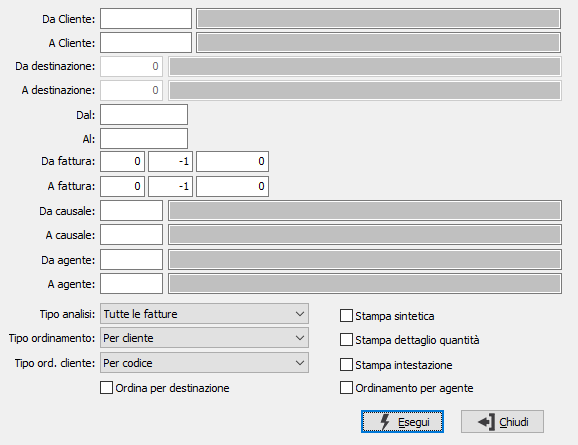

Lista fatture
Il programma effettua la stampa dell'elenco delle fatture esistenti in archivio in base ai parametri inseriti dall’utente.
E’ possibile stampare i documenti relativi ad una tipologia omogenea di fatture, e/o ad uno o più cliente entro limiti di data specificati.
E’ possibile selezionare solo le fatture da contabilizzare oppure tutte le fatture oppure solo le contabilizzate.

DA CLIENTE: eventuale codice del cliente, presente in anagrafica, da cui si vuole iniziare la selezione di analisi. Confermando a vuoto, la selezione inizia dal primo cliente valido. Sul campo sono attive le funzioni di ricerca (F9).
A CLIENTE: eventuale codice del cliente, presente in anagrafica, con cui si vuole terminare la selezione di analisi. Confermando a vuoto, la selezione termina con l'ultimo cliente valido. Sul campo sono attive le funzioni di ricerca (F9).
DA DESTINAZIONE: codice della destinazione del cliente, da cui si vuole iniziare la selezione di analisi. Confermando a vuoto, la selezione inizia dalla prima destinazione valida. Sul campo sono attive le funzioni di ricerca (F9).
A DESTINAZIONE: codice della destinazione del cliente, con cui si vuole terminare la selezione di analisi. Confermando a vuoto, la selezione termina con l'ultima destinazione valida. Sul campo sono attive le funzioni di ricerca (F9).
DA DATA: eventuale data del documento da cui deve iniziare l’analisi dei documenti relativamente ai precedenti parametri di selezione. Confermando a vuoto, l’analisi inizia con il primo documento valido.
A DATA: eventuale data del documento con cui si desidera terminare l’analisi dei documenti relativamente ai precedenti parametri di selezione. Confermando a vuoto, l’analisi si conclude con l'ultimo documento valido.
DA FATTURA: indicare anno, serie (-1 tutte), e numero da cui iniziare l'elaborazione.
A FATTURA: indicare anno, serie (-1 tutte), e numero con cui terminare l'elaborazione.
DA CAUSALE: codice della causale documento da cui si vuole iniziare la selezione. Confermando a vuoto, la selezione inizia dalla prima causale valida. Sul campo sono attive le funzioni di ricerca (F9).
A CAUSALE: codice della causale documento con cui si vuole iniziare la selezione. Confermando a vuoto, la selezione termina all’ultima causale valida. Sul campo sono attive le funzioni di ricerca (F9).
DA AGENTE: codice dell'agente, da cui si vuole iniziare la stampa. Confermando a vuoto, la stampa inizia dal primo codice valido. Sul campo sono attive le funzioni di ricerca (F9).
A AGENTE: codice dell'agente, con cui si vuole terminare la stampa. Confermando a vuoto, la stampa termina con l'ultimo codice valido. Sul campo sono attive le funzioni di ricerca (F9).
TIPO ANALISI: consente di selezionare per l'analisi le fatture da contabilizzare, quelle contabilizzate oppure tutte le fatture presenti.
TIPO ORDINAMENTO: definisce il tipo ordinamento della stampa: per cliente, per numero.
TIPO ORDINAMENTO CLIENTE: attivo solo se l'ordinamento è per cliente; definisce se i clienti devono essere riportati per codice o per ragione sociale.
ORDINA PER DESTINAZIONE: in caso di ordinamento per cliente, definisce se l'analisi deve essere impostata per cliente/destinazione.
STAMPA SINTETICA: indica se effettuare la stampa in formato sintetico (casella con segno di spunta) o completa (casella vuota).
STAMPA DETTAGLIO QUANTITÀ: flag che indica se nella stampa desideriamo visualizzare il dettaglio delle quantità.
STAMPA INTESTAZIONE: Indica se stampare una pagina con i criteri di selezione della stampa, l’operatore che l’ ha eseguita, la data e l’ora (casella con segno di spunta).
ORDINAMENTO PER AGENTE: definisce se l'analisi deve essere ordinata per agente; l'ordinamento per agente ha priorità sull'ordinamento selezionato.
Confermando tramite pressione del bottone Esegui, viene avviata la stampa della lista che riporta le informazioni sulle fatture selezionate.